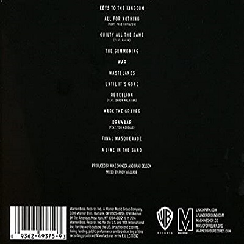
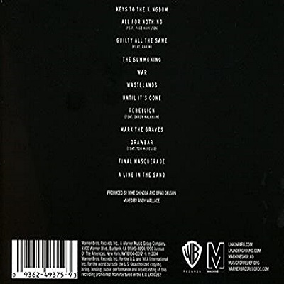

the hunting party
 

Lançamento: 16 de Junho de 2014
Produzido por: Mike Shinoda
Gravadora: Warner Bros. Records/Machine Shop Recordings
O álbum foi lançado em 26 de junho de 2012 pela Warner BThe Hunting Party é o sexto álbum de estúdio da banda de rock americana Linkin Park. O álbum, produzido pelos membros da banda Mike Shinoda e Brad Delson, foi lançado pela Warner Bros. Records e Machine Shop em 13 de junho de 2014. É o primeiro álbum desde Meteora (2003) a não ser produzido com Rick Rubin, depois de produzir o álbum Banda anterior três álbuns de estúdio. O título The Hunting Party é uma metáfora contextual: Linkin Park é o partido que está caçando para trazer de volta a energia e a alma do rock.
The Hunting Party é uma saída do som de rock eletrônico dos dois álbuns de estúdio anteriores da banda. O álbum, descrito por Shinoda como simplesmente “um registro de rock”, serve uma declaração da banda contra bandas de rock atuais e ativas, acusadas por ele de “tentar ser outras bandas e jogar com segurança”. Empacotado por uma arte de Brandon Parvini baseado em um desenho original de James Jean, o álbum levou menos de um ano para gravar e produzir, com material sendo improvisado escrito pela banda. O álbum também apresenta aparições como Page Hamilton do Helmet, Daron Malakian de System of a Down, Tom Morello de Rage Against the Machine e Rakim, marcando a primeira vez que o Linkin Park colaborou com outros artistas em um álbum de estúdio
O álbum foi promovido pela banda e Warner Bros, com vários teasers promocionais e entrevistas produzidas e publicadas no lead-up para o lançamento do álbum e festas de escuta do álbum sendo realizada em todo o mundo em várias datas. A banda embarcou no Carnivores Tour, uma turnê de dupla manchete com Thirty Seconds to Mars, bem como The Hunting Party Tour, em apoio ao álbum. Cinco singles de The Hunting Party foram lançados; “Guilty All the Same” em março de 2014, “Until It Gone” em maio de 2014 e “Wastelands”, “Rebellion” e “Final Masquerade” em junho de 2014.
O álbum recebeu críticas geralmente positivas de críticos, que elogiaram seu retorno ao som mais pesado do rock de seus álbuns mais velhos. Ele estreou no número três na Billboard 200, e colocou no número quatro na lista Revolver de “The 20 Best Albums of 2014”.
Desenvolvimento
Em 2010 e 2012, respectivamente, Linkin Park lançou seu quarto e quinto álbum de estúdio A Thousand Suns e Living Things. Os álbuns, ambos produzidos por Rick Rubin e Mike Shinoda, marcaram um deslocamento da direção musical da banda de um som nu metal-orientado, reconhecido com Hybrid Theory (2000) e Meteora (2003), para um mais experimental e “vanguarda” Som. Os álbuns de influência eletrônica foram comercialmente bem-sucedidos.
A produção do sexto álbum de estúdio da banda começou como resultado de uma série de eventos em que Shinoda decidiu abandonar o som eletrônico e experimental dos dois álbuns de estúdio anteriores da banda. Shinoda tinha originalmente gravado e produzido demos, que continuaram o som de A Thousand Suns e Living Things, para o sexto álbum de estúdio da banda durante a turnê da banda Living Things World Tour em 2013. Ele apresentou o demos para seus companheiros de banda, que recebeu recepção positiva do resto da banda, e para Rubin, que também foi positivo para o demos, embora descrevendo-os para Shinoda como mais “poppy” do que ele esperava. No entanto, Shinoda, depois de ouvir os demos novamente após o final da turnê, sentiu uma forte negatividade em relação ao seu material, especialmente após as declarações de Rubin. Em uma entrevista da Warner Music, Shinoda afirmou que “eu nem acredito nessa música. Este é um erro, eu não gosto do que estou fazendo. Eu meio que fui para trás no processo e acabou com tudo isso e Começou coisas novas. “
Seguindo A Thousand Suns e Living Things, álbuns que foram criados com a saída de um som que não era “novo e não é legal”, o sexto álbum de estúdio da banda foi abordado como um retorno ao som inicial da banda, com Os sons eletrônicos de seus dois álbuns de estúdio anteriores sendo descartados em favor da instrumentação de rock tradicional da banda. Usando o Hybrid Theory como um modelo, a banda compôs e gravou-a no contexto dos tempos modernos, em 2014 em vez de 2000. O guitarrista Brad Delson afirmou brincando que o álbum era uma “alternativa Hybrid Theory” e “talvez sua paquera”, com o álbum sendo inspirado por artistas que a banda ouviu antes de iniciarem sua carreira musical. Shinoda contou à Rolling Stone sobre as idéias em torno da The Hunting Party: “Nós não somos crianças de 18 anos de idade que fazem um registro alto – nós somos adultos de 37 anos de idade fazendo um registro alto. E o que faz um cara de 37-anos- Velho irritado é diferente do que nos fez zangado com 18. “
Gravação
The Hunting Party foi gravado no Larrabee Sound Studios, localizado em Hollywood, Los Angeles. Durante a gravação do sexto álbum de estúdio da banda, a banda passaria cinco ou seis dias por semana nos estúdios Larrabee trabalhando no disco. The Hunting Party também foi gravado em parte no EastWest Studios, também localizado em Hollywood. Lá, o baterista Rob Bourdon e Shinoda gravariam bateria e percussão para o álbum. A banda também gravaria outros materiais para o álbum na EastWest na ocasião.
Em uma entrevista com a Rolling Stone, Shinoda disse que o álbum foi difícil para o baterista Rob Bourdon, onde ele teve que se exercitar para atender a velocidade da música e estilo. Ele comentou que “Provavelmente é a coisa mais difícil que ele já tocou em um de nossos álbuns, ele teve que trabalhar fisicamente, ele teve que ir correndo, levantar pesos, trabalhar com um treinador”, eventualmente Bourdon sente que ele tinha se tornado um melhor baterista no final de cada dia após a gravação. Shinoda disse mais tarde à revista que Bourdon tinha que procurar ajuda de um quiroprático depois que ele tinha quebrado seu material de gravação de volta para o novo álbum. Shinoda disse a Q que “Rob estava se matando, tocou 10 horas por dia durante sete dias seguidos e soprou suas costas”.
Os amplificadores de marca Orange, Bogner e ENGL foram usados no disco por Delson, fornecendo um “som de núcleo” descrito pelo engenheiro Ethan Mates como “uma pequena coleção de tons de núcleo para ser usada de forma sonoramente consistente em todo o registro”. Os amplificadores da marca Chandler também foram usados para overdubs e “partes mais altas”. Delson falou sobre sua configuração de estúdio para The Hunting Party, afirmando que “É ótimo ter uma configuração onde eu possa executar combinações de cabeças e táxis simultaneamente para obter o tom mais apropriado, ou fazer algo mais simples como gravar apenas um gabinete com dois microfones “
Delson contribuiu muito para a produção de The Hunting Party.
“Nos últimos discos eu tocava guitarra no estúdio, mas eu estava focando em outros instrumentos. Eu tenho tocado violão desde os 12 anos, e tornou-se fascinante aprender teclados, programação e Pro Tools, que é como um instrumento em si. Mas essas músicas são todas sobre redescobrir a guitarra e ter um monte de diversão com ele. Há uma imprevisibilidade para essas canções que se presta a mim só pegar uma guitarra e tocar insanamente. Nada é pré-planejado. Para alguns dos solos mais rápidos eu aquecer, mas não de uma maneira aberta metódica. Se eu quiser gravar um solo em um ritmo rápido, eu apenas macarrão nessa Strat por uma hora até que eu estou hiper-rápido. Eu não quero mesclar para a estrada a 15 milhas por hora. Eu quero estar em plena velocidade pelo tempo que eu tenho jogado para ele. ” – Brad Delson
Canções
O vocalista Chester Bennington chegou atrasado no processo de gravação do álbum, tendo sido escolhido para substituir Scott Weiland na banda Stone Temple Pilots, e então passou a gravar High Rise e turnê com a banda durante a maior parte de 2013. Quando ele finalmente se juntou à banda no estúdio, ele ficou surpreso ao descobrir que a banda tinha revertido para o seu som mais pesado rock-centric. Bennington afirmou em uma entrevista com Kerrang: “Mike escreveu toneladas enquanto eu estava em turnê com o Stone Temple Pilots no ano passado. Quando cheguei em casa, havia muito para eu me recuperar, e ele estava me mostrando coisas e eu era como , ‘Cara, isso é incrível!’ Fiquei realmente surpreso como pesado foi “.
O álbum conta com quatro artistas convidados; Rakim do duo de hip hop Eric B. & Rakim em “Guilty All the Same”, Page Hamilton da banda de metal alternativa americana Helmet em “All for Nothing”, Daron Malakian de System of a Down para a canção “Rebellion” e Tom Morello de Rage Against the Machine para a na canção “Drawbar”.
Bennington comentou sobre as colaborações, afirmando que “Nós realmente sentimos como se precisássemos ser inspirados e seguir em outra direção. Acho que quando entramos em Page, Mike tinha escrito esse refrão e cantado, e sua voz tinha esse tom, e Era diferente de qualquer coisa que eu tinha ouvido dele antes. E eu estava tipo, “Cara isso é louco, isso soa como uma canção de capacete! É legal! “E nós estávamos tipo,” Cara, por que não vemos se nós podemos ficar como Page aqui? “E se é por isso que a música diz que está sentindo como deveria ser, então por que não Nós apenas vamos direto para a fonte “.
Titulo do Álbum
O título do álbum, The Hunting Party, é uma metáfora contextual. O álbum, um retorno aos sons mais originais e duros da banda, representa o desejo da banda de não só criar algo diferente de outras bandas de rock, mas também trazer de volta a “energia e alma” do próprio rock, e que Linkin Park é a começo onde que vai caçar para que a energia e a alma. Shinoda elaborou o título do álbum em uma entrevista com Kerrang! Explicando: “Nós ficamos tão doentes de outras bandas tentando ser outras bandas e tocando em segurança o tempo todo, então o nome do álbum vem de uma teoria sobre a cultura tornando-se muito passiva, todo mundo apenas esperando por oportunidades para chegar a eles em vez de Eu sei que sempre haverá bandas mais pesadas do que nós, mas The Hunting Party é o Linkin Park saindo e pegando para nós mesmos “. A inspiração para o título veio de um artigo de notícias Shinoda lê on-line sobre as preocupações de um escritor japonês sobre a crescente sociedade de hoje. O escritor descreveu os jovens de hoje como “herbívoros”, e explicou como eles estão pastando essencialmente, esperando por uma oportunidade de vir a eles, em vez de caçá-lo.
músicas
- Keys to the Kingdom
- All for Nothing (feat. Page Hamilton)
- Guilty All the Same (feat. Rakim)
- The Summoning
- War
- Wastelands
- Until It’s Gone
- Rebellion (feat. Daron Malakian)
- Mark the Graves
- Drawbar (feat. Tom Morello)
- Final Masquerade
- A Line in the Sand